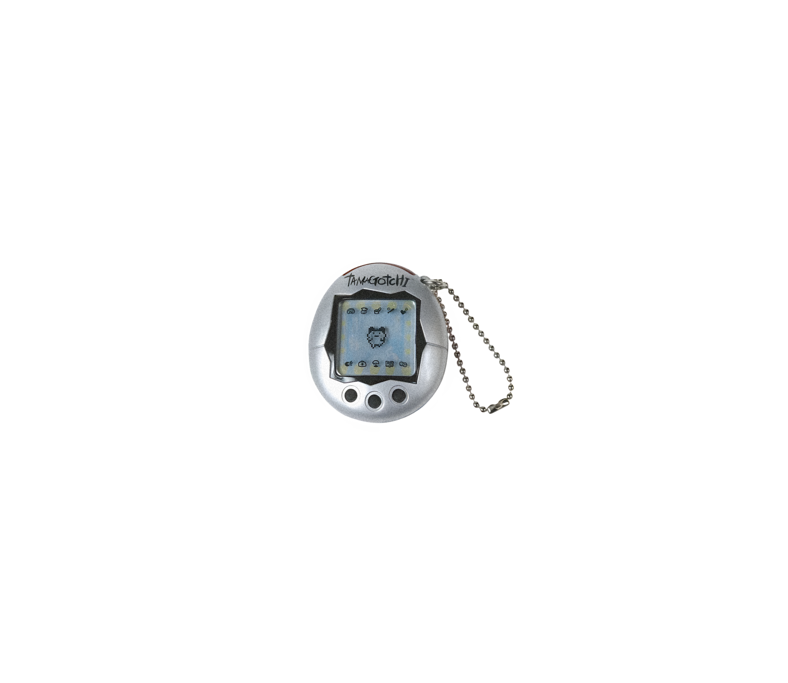
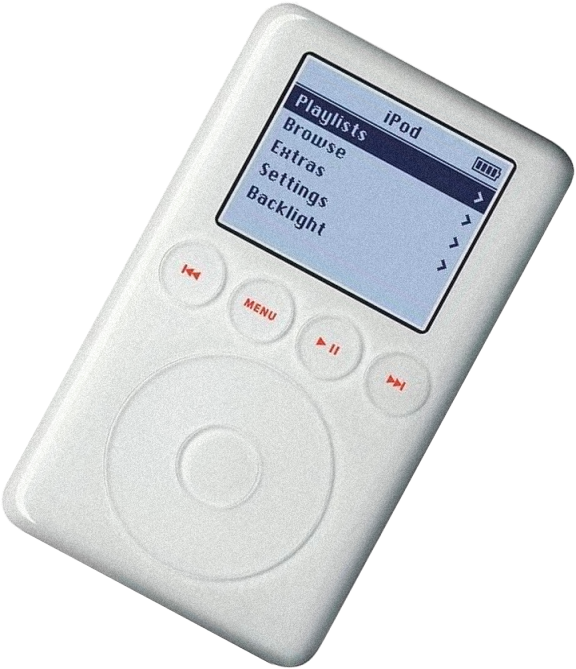
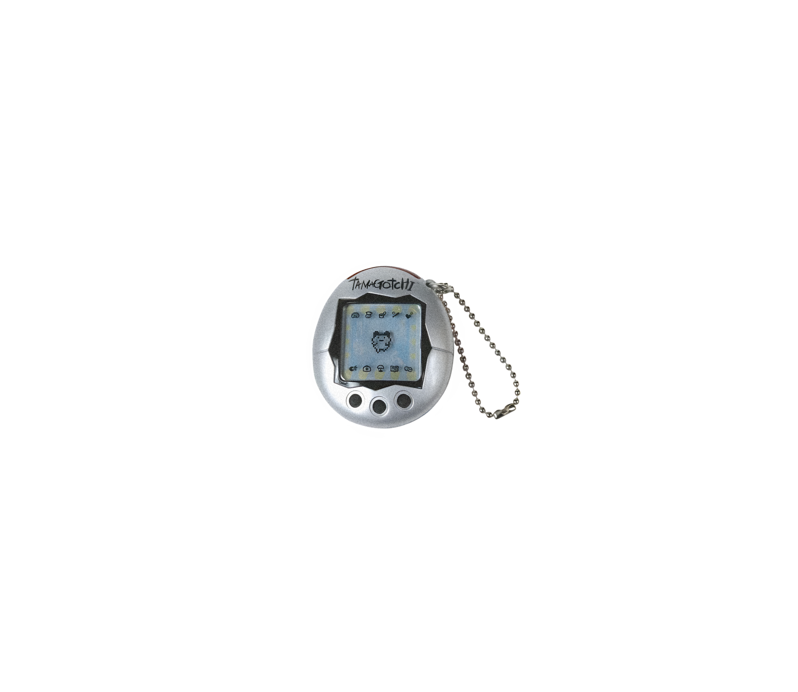
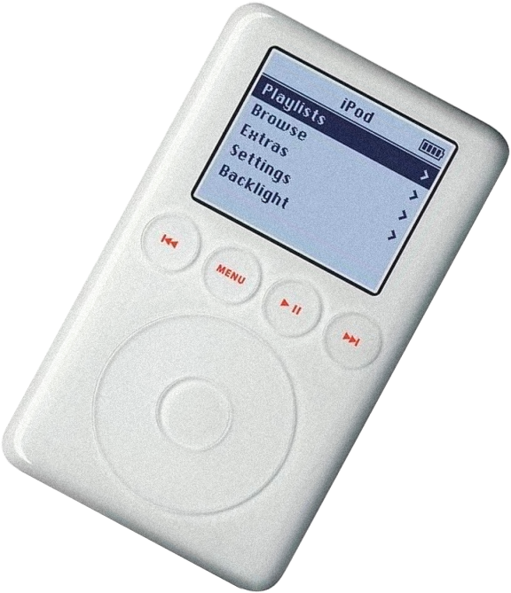
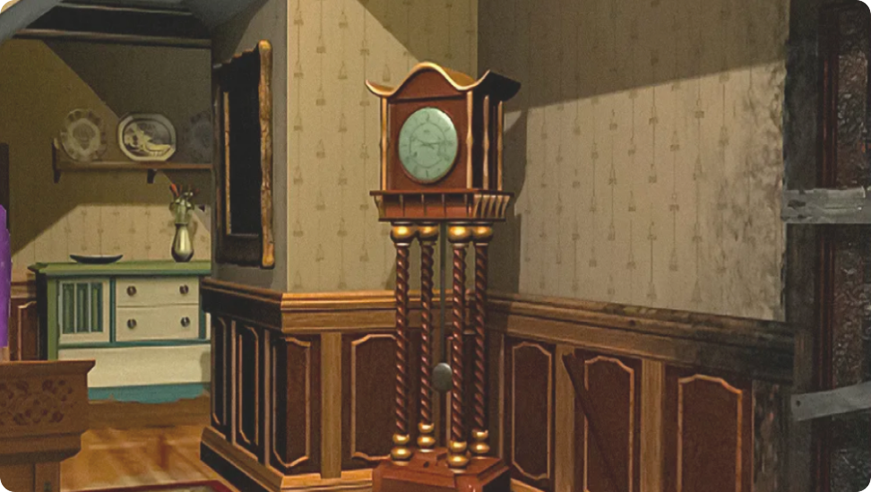
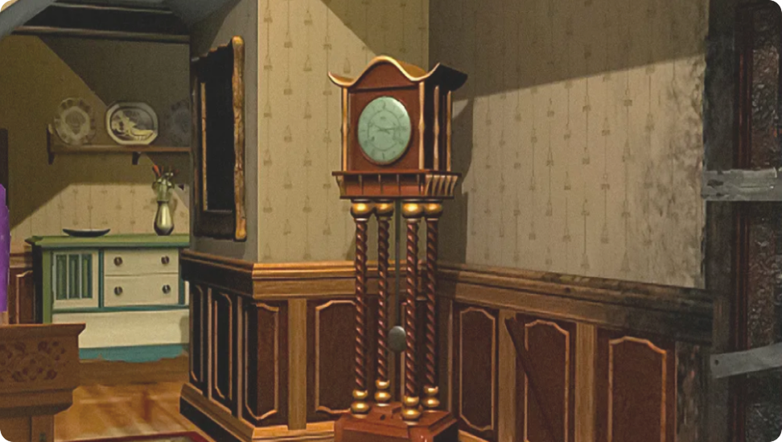
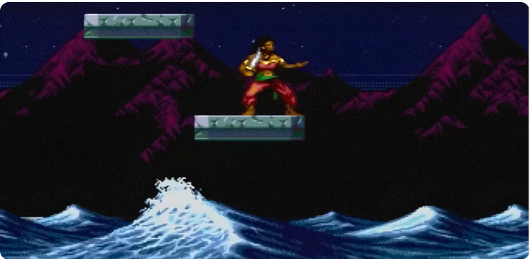
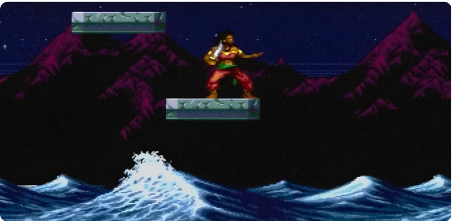
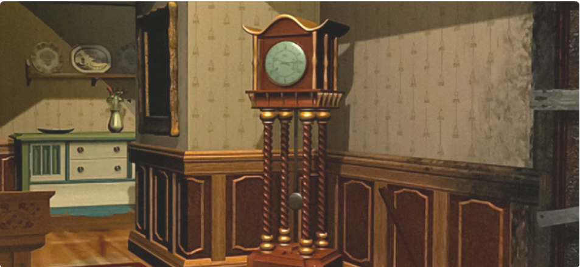
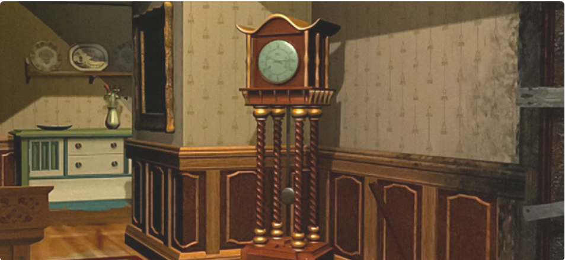

Узнай, откуда к нам приходят
модные тренды, какую одежду,
обувь и аксессуары носили модники 90-х


 



В 90-е годы с падением железного занавеса и открытием границ появились сотни новых гаджетов.
Некоторые гаджеты стали настоящим ноу-хау и символами тех лихих лет, однако технический прогресс в мире электроники за 20 последних лет шагнул далеко вперед.
И хотя сейчас эти гаджеты выглядят всего лишь наивно-забавной игрушкой, они по-прежему вызывают у тех, кому за 30, ностальгию по давно ушедшему детству и обладают какой-то неповторимой магией и притягательностью, словно и них есть душа. А вот нынешняя молодежь может и вовсе не догадаться о предназначении этих вещей.


Питомец тамагочи
В 90-е годы с падением железного занавеса и открытием границ появились сотни новых гаджетов.

Питомец тамагочи

Тамагочи

Видеодвойка
Пейджер
Дискета
Полароид

Кассетный плеер
Игровые приставки
Тетрис

Электроника ИМ
Денди
Вместе с 90-ми ушли и многие гаджеты того времени: пейджеры, автоответчики, электронные органайзеры. Молодежи бывает сложно уже даже догадаться об их предназначении. Но некоторые из артефактов 90-х все еще продаются даже сейчас.
Разумеется, настоящие гаджеты из 90-х до сих пор пылятся где-то в гаражах, на балконах и многочисленных антресолях. И купить их просто: достаточно зайти на любую интернет-барахолку. В этой статье мы рассказываем о множестве забытых игр и гаджетов.
Тамагочи
Видеодвойка
Пейджер
Дискета
Полароид
Кассетный плеер
Игровые
приставки
Тетрис
Электроника
ИМ
Денди
Вместе с 90-ми ушли и многие гаджеты того времени: пейджеры, автоответчики, электронные органайзеры. Молодежи бывает сложно уже даже догадаться об их предназначении. Но некоторые из артефактов 90-х все еще продаются даже сейчас.
Разумеется, настоящие гаджеты из 90-х до сих пор пылятся где-то в гаражах, на балконах и многочисленных антресолях. И купить их просто: достаточно зайти на любую интернет-барахолку. В этой статье мы рассказываем о множестве забытых игр и гаджетов.
«Впервые увидел на компьютере у друга»: 9 ностальгических видеоигр из 1990‑х

Игры сильно изменились за последние 30 лет. В 1990-е и 2000-е функция автосохранения казалась роскошью, а примитивные саундтреки — настоящим искусством. Мы рассказываем, какие видеоигры тех времен были особенно запоминающимися. В декабре этого года приставка Dendy отмечает свой юбилей — ей уже 30 лет! Давайте вместе вспомним самые классные игрушки 90х и их концовки, до которых доходили только единицы.Видеоигры, представленные на фото: The Guardian Legend, Golden Axe, Pirates of Dark Water, Spy Fox, Half-Life, Nancy Drew, ZanZarah: The Hidden Portal


 


«Впервые увидел на компьютере у друга»: 9 ностальгических видеоигр из 1990‑х
Игры сильно изменились за последние 30 лет. В 1990-е и 2000-е функция автосохранения казалась роскошью, а примитивные саундтреки — настоящим искусством. Мы рассказываем, какие видеоигры тех времен были особенно запоминающимися. В декабре этого года приставка Dendy отмечает свой юбилей — ей уже 30 лет! Давайте вместе вспомним самые классные игрушки 90х и их концовки, до которых доходили только единицы.Видеоигры, представленные на фото: The Guardian Legend, Golden Axe, Pirates of Dark Water, Spy Fox, Half-Life, Nancy Drew, ZanZarah: The Hidden Portal
 



«Впервые увидел на компьютере у друга»: 9 ностальгических видеоигр из 1990‑х
Игры сильно изменились за последние 30 лет. В 1990-е и 2000-е функция автосохранения казалась роскошью, а примитивные саундтреки — настоящим искусством. Мы рассказываем, какие видеоигры тех времен были особенно запоминающимися. В декабре этого года приставка Dendy отмечает свой юбилей — ей уже 30 лет! Давайте вместе вспомним самые классные игрушки 90х и их концовки, до которых доходили только единицы.Видеоигры, представленные на фото: The Guardian Legend, Golden Axe, Pirates of Dark Water, Spy Fox, Half-Life, Nancy Drew, ZanZarah: The Hidden Portal

 


Polaroid land camera
«Полароид» вряд ли можно назвать по-настоящему массовым продуктом. Все же по стоимости печати выгоднее были обычные пленочные мыльницы. Тем не менее моментальное фото всегда находит сторонников. В 90-х благодаря «Полароиду» можно было не ждать, когда пленку проявят и напечатают фотографии. А сейчас, в век цифры и бесконечной ленты Instagram, это возможность получить наконец что-то осязаемое, мелкий сувенир из поездки или презент для близкого человека.
Современные фотоаппараты моментальной печати работают по тем же принципам: покупаете картридж, делаете снимок и получаете фотографию. На рынке множество моделей от разных производителей, но есть и тот самый Polaroid. В отсутствие смартфонов с фотокамерами технология мгновенной печати Polaroid казалась в 90-е очень прогрессивной, пускай снимки получались небольшого формата 8×8, с блеклыми цветами и со временем выцветали.
Polaroid Sun 660

Polaroid 600 Cool Cam
Polaroid gudetama

Polaroid land camera
Polaroid Sun 660

Polaroid 600 Cool Cam

Polaroid gudetama


Сегодня музыку за пару кликов можно послушать со смартфона, а в 90-е сопроводить прогулку вне дома музыкой можно было лишь с помощью плеера, к которому прилагались довольно компактные наушники.

Кассетный плеер «SONY»

Практически каждый в возрасте 30+ хорошо помнит кассетные плееры, история которых началась в 1979 году. Именно в это время японская фирма «SONY» запустила первую серию аудиоплееров. В СССР первые аудиоплееры начинают появляться в начале 80-х годов. Для того времени этот чудо аппарат стоил немалых денег.
В 90-е годы кассетные аудиоплееры стали символом прогресса, моды, крутости и в какой-то мере роскоши среди молодежи. Были и отечественные и зарубежные плееры, но больше хотелось иметь зарубежный, так как они были более «навороченными». Хотя и некоторые отечественные модели плееров были вполне неплохие. В 90-е годы появилось также множество других фирм, выпускавших кассетные плееры, в том числе и китайских.